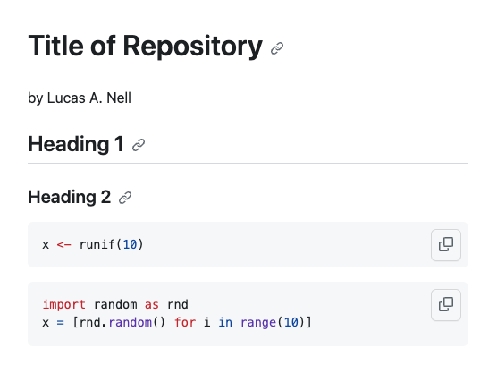

- Go over syllabus
- Icebreaker
2023-11-13
Introduction
Prior to class
Install git
Get GitHub account
Sign up for GitHub Education Pack (https://education.github.com/pack)
Install GitKraken
Any issues?
Why use version control?

- Collaborating with a team
- Sharing code with strangers
- Tracing and avoiding horrible mistakes
We’ll be using it throughout the class
Overview of git and GitHub

Forking and cloning

Branching, merging, and GitHub Flow

What to include on git and GitHubList from https://doi.org/10.7287/peerj.preprints.3159v2
Definitely include:
- Scripts (e.g.,
*.R,*.py) - Raw data (especially as plain text)
- Configuration files (e.g.,
*.Rproj,.gitignore)
Don’t include:
- Files that only serve a temporary purpose
Maybe:
- Intermediate data (e.g.,
*.csv,*.rds) - Figures (e.g.,
*.pdf,*.png) - Reports (e.g.,
*.html, *.pdf`)
Avoid files by listing them in .gitignore (by full file name or by extension (e.g., *.pdf)
Questions to ask:
1. Is it useful?
2. Will it cause problems with git or GitHub?
Generally avoid binary files (including *.docx, *xlsx, and *.pdf), especially those that are large and change a lot!
Let’s try forking and cloning
Fork empty repo:
- Go to
https://github.com/lucasnell/empty - Fork
- Change repo name to something descriptive about your project
- Add short description
Clone your newly forked repo:
- Open GitKraken, click
File>Clone Repo - In URL field, type
https://github.com/<user>/<repo>.git Clone the repo!
Alternatively, from the command line:
cd PARENT-DIRECTORY git clone https://github.com/YOUR-USERNAME/YOUR-REPOSITORY.git
Using markdown to create documentation
# Title of Repository by Lucas A. Nell ## Heading 1 ### Heading 2 ```r x <- runif(10) ``` ```python import random as rnd x = [rnd.random() for i in range(10)] ```
This renders as:

Let’s create a README.md file
# Heading ## Sub-heading ... 1. Numbered list 2. ... * bulleted list * indented item * ... **bold text** *italic text* `inline code` ```language code chunk ``` > block quotes  [links](https://google.com) <https://google.com>
Details to include:
- Project title
- Author(s)
- Project description
- How to use and install
More markdown syntax:
Let’s try committing and pushing
Make changes, commit, and push:
- Edit
README.mdto properly describe your project - In GitKraken, stage changes
- Add commit message and commit them locally
- Push changes to GitHub
Alternatively:
cd DIRECTORY git add README.md git commit -m "Added README.md..." git push
Verify changes at https://github.com/<user>/<repo>
Providing feedback on README.md files
- Exchange your GitHub usernames and project repo names with someone else
- You’ll each provide feedback on the other’s
README.mdfile - Go to their repo on GitHub, look over their
README.mdand write down questions and constructive feedback - On GitHub, click “Issues”, then “New issue”
- Put in your feedback with a title
Conclusion
Let’s take some time to hash out your project ideas
More info on git and GitHub: